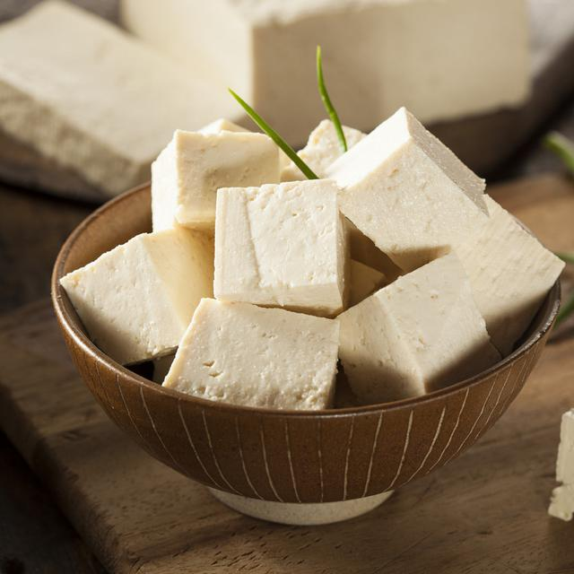

Master Chef Nusantara
Tentang Website
Biodata
Tentang Website
Biodata
menu
Koleksi Resep Khas Nusantara

©Sofyan Thayf, 2019 Modul Praktikum Desain Web STMIK KHARISMA Makassar 10
Ayam Goreng
Ayam Panggang Bumbu Merah
Nasi Goreng Sosis
Pallu Basa
Rawon
Rendang
Sambal Petai Udang
Sate Ayam Madura
Sate Lilit
Soto Ayam
Tahu Tempe Bacem